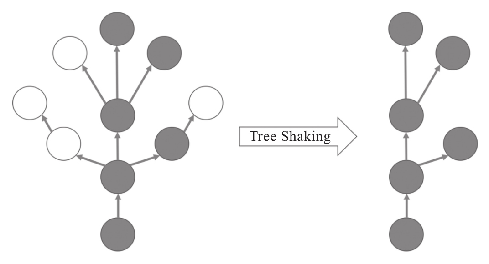

在之前介绍的操作符实现方式中，操作符的函数实现部分都会用上this，读者是否会觉得有点不对劲？
如果严格遵照函数式编程的思想，应该尽量使用纯函数，纯函数的执行结果应该完全由输入参数决定，如果函数中需要使用this，那就多了一个改变函数行为的因素，也就算不上真正的纯函数了。没错，定义操作符的函数中访问this，实际上违背了面向函数式编程的原则。
不难发现将操作符和Observable关联的方法的确会造成问题，让我们先来了解这些问题是什么，然后介绍一种新的定义操作符的方式：pipeable操作符，也称为lettable操作符。
1.操作符和Observable关联的缺陷
无论是静态操作符还是实例操作符，通常在代码中只有用到了某个操作符才导入（import）对应的文件，目的就是为了减少最终的打包文件大小。
比如，代码中如果只用到了interval和map两个RxJS自带的操作符，那么就这样导入相关文件：
import 'rxjs/add/observable/interval'; import 'rxjs/add/operator/map';
这样，通过webpack等打包工具产生浏览器端代码的时候，只有interval和map相关代码会被包含，RxJS自带的其他几十个操作符代码既然用不上也就不需要包含进来，这样打包文件就会很小。
相反，如果简单粗暴地导入整个RxJS，像下面这样：
import Rx from 'rxjs';
使用起来倒是十分痛快，如果想要用一个新的操作符的话，不用去再添加一行import，所有的操作符想用就用，直接从Rx对象上获取，但是，这样做的代价就是最终打包文件会很大，因为RxJS所用的功能代码都被包括进来了。在网页应用中，如果想要追求极致的性能，最好不要把从没用过的代码包括进来，因为这会减慢网页资源的下载速度。
在现代网页应用开发中，JavaScript往往需要通过打包之后才发布到产品环境，因为打包过程可以把多个JavaScript源代码合并到一个文件中，减少下载JavaScript资源的HTTP请求数量，而减少HTTP请求数量是提高网页应用性能的重要原则。
JavaScript的打包技术发展迅速，最初由打包工具rollup.js引入一种叫做Tree-Shaking的技术，使用更加广泛的打包工具webpack从版本2.0开始也支持Tree-Shaking，这个技术的名称很形象，功能就像是“摇树”。代码之间的导入和调用关系，就像是一棵树的枝枝杈杈，但是，实际上并不是所有被导入的代码都会被执行，这些不会被使用的代码就是“死代码”，死代码就像是树上的枯枝枯叶，毫无生机，没有作用，存在反而会增加树干承受的压力，应该除掉。当使劲摇晃树干的时候，这些没有生命的枯枝枯叶就会掉下来，剩下来的就是有活力的健康树叶和树枝，这就是Tree Shaking的目的：去掉无用的死代码，如图3-1所示。

图3-1 Tree-Shaking示意图
有的死代码是开发者团队内部的代码，比如某些文件中的函数，最开始编写出来有意义，但是逐渐被其他函数代替，就没有代码调用这个函数了，但是也不会有人想起来去删掉这些函数代码。
更多的死代码是第三方库的代码，因为第三方库通常是为了通用功能而实现的，所以功能往往很多，但是具体某个应用不大可能会用到其中所有的功能，所以，最好在打包过程中把自动删除死代码。
在Tree Shaking技术出现之前，要减少死代码，应用层开发者必须很小心，只导入真正用得上的文件。不过，即使开发者只导入真正用上的文件，如果某个被导入的文件中只有部分函数用得上，其余函数用不上，那开发者也爱莫能助，因为导入一个文件就会让其中的所有代码进入最终打包文件中。
Tree Shaking技术出现之后，打包工具可以根据实际代码之间的引用关系来发现死代码，如果一个文件虽然被导入，但是其中某些函数没有被调用，那最终的打包文件也会把这些函数代码去掉。这项技术对网页前端开发无疑是一个福音，因为发现死代码的工作自动化了。
可是，很不幸的是，Tree Shaking却帮不上RxJS什么忙，这又是为什么呢？
这是因为Tree Shaking只能做静态代码检查，并不是在程序运行时去检测一个函数是否被真的调用，只有一个函数在任何代码里面都没有引用过，才认为这个函数不会被引用。然而，RxJS中任何一个操作符都是挂在Observable类上或者Observable.prototype上的，赋值给Observable或者Observable.prototype上某个属性在Tree Shaking看来就是被引用，所以，所有的操作符，不管真实运行时是否被调用，都会被Tree Shaking认为是会用到的代码，也就不会当做死代码删除。
不能应用Tree Shaking损失的只是性能提高方式，但是操作符和Observable关联的缺点还不止如此，还会引起功能的问题。
用给Observable“打补丁”的方式导入操作符，每一个文件模块影响的都是全局唯一的那个Observable，这个做法让我们闻到了坏代码的味道，谁都知道，代码中应该尽量避免去碰全局资源，否则，程序中不同位置的代码都去修改某个全局资源，可能会造成很大麻烦。
假设有这样一个场景，某个应用使用了RxJS名为X的库，导入了map这个操作符来实现某个功能，另外有一个应用Y，使用了库X，同时也使用了map。那么，应用Y其实无需导入map，因为使用库X就已经让Observable拥有map的功能了，应用Y只要坐享其成直接使用map就可以了，Y甚至不知道需要导入map，程序也一切工作正常。
突然有一天，X的开发者发现了一个更高明的实现方法，不需要使用map这个操作符，于是就在X的代码中把导入map的语句去掉，于是，惨剧就发生了。Y的代码没有任何改变，由于X的一个改变就突然无法正常工作了，因为再没有谁去导入map，使用map的语句必定会出错误。
对于X来说，库的接口没有发生任何变化，只是实现方式改变，所以如果X是以一个npm库的方式发布，那也不算破坏性变化，根据语法版本（semantic versioning）规则，只需要改变patch号就足够了，比如以前npm版本号是1.0.1，这个改变之后对应的版本号就是1.0.2，X这么做也毫无过错。
对于Y来说，自身代码没有任何变化，只是使用了X在一个大版本下的最新版本发布，就突然让自己的代码无法工作，也十分冤枉。
出现这种原因，归根结底就是因为导入一个操作符会影响全局Observable类。
2.使用call来创建库
正因为使用“打补丁”的方式导入操作符有这样的问题，对于RxJS库的开发有一条规则，就是不要使用“打补丁”的方式导入其他操作符，避免污染全局Observable的问题。
如果不用“打补丁”，那么RxJS库怎么使用其他操作符呢？
对于实例操作符，可以使用前面介绍过的bind/call方法，让一个操作符函数只对一个具体的Observable对象生效；对于静态操作符，就直接使用产生Observable对象的函数，而不是依附于Observable的静态函数。
用示例来展示，利用map来创造一个叫double的操作符，这个double的工作就是把上游所有数据乘以2这么简单，借助map来实现很自然。为了验证double的功能，我们利用of来创建Observable对象作为map的上游，of的具体用法在第4章会详细介绍，目前，只需要知道of产生一个Observable对象，其中产生的数据就是of的各个参数。
代码如下：
import {Observable} from 'rxjs/Observable';
import {of} from 'rxjs/observable/of';
import {map} from 'rxjs/operator/map';
Observable.prototype.double = function() {
return this::map(x => x * 2);
}
const source$ = of(1, 2, 3);
const result$ = source$.double();
result$.subscribe(value => console.log(value));
请注意，现在导入操作符的路径和以前不同，以前实例操作符都是在rxjs/add/operator/目录下，现在是在rxjs/operator/目录下，以前静态操作符是在rxjs/add/observable/目录下，现在是在rxj/observable目录下，而且，以前只需要导入文件模块并没有指定导入内容的变量，现在都指定了导入变量，就像下面的代码中一样，分别导入了of和map：
import {of} from 'rxjs/observable/of';
import {map} from 'rxjs/operator/map';
上面导入的这两个模块，并没有对Observable打补丁，导入的功能只能靠变量of和map来访问，可以认为，of和map就是两个独立的函数。
实际上，现在RxJS中传统的打补丁方式，使用的也是observable和operator目录下的代码，例如，rxjs/add/observable/of.js文件所做的工作就是导入rxjs/observable/of.js，然后把导入的函数挂到Observable类上去，检查node_modules/rxjs/add/observable/of.js文件，代码如下，可以看得很清楚：
"use strict";
var Observable_1 = require('../../Observable');
var of_1 = require('../../observable/of');
Observable_1.Observable.of = of_1.of;
rxjs/add/operator/map.js也一样，不同的是它导入的是rxjs/operator/map.js的内容，然后挂在Observable.prototype上。
在RxJS v5的代码库中，rxjs/operator/和rxjs/observable下的是各个操作符的函数实现，而rxjs/add/operator/和rxjs/add/observable/目录下代码的工作就是把这些函数实现挂到Observable上去。
既然直接获得了操作符的函数实现，那就可以直接调用它们，不和Observable类有任何纠葛。对于静态操作符，直接调用就是了，就像下面这样：
const source$ = of(1, 2, 3);
正因为静态操作符不能包含对this的访问，所以其实不需要和Observable类有任何关系，以前把它们挂在Observable类上，纯粹就是为了表示两者有些语义联系而已。
对于实例操作符，因为函数实现要访问this，所以需要用bind或者call的方式来绑定this，在上面的代码中，我们直接使用了绑定操作符，如下所示：
return this::map(x => x * 2);
在这个文件中虽然导入了of和map，但是这两个函数并没有影响全局的Observable类，在同一个项目中，其他文件如果没有导入相关操作符，依然不能直接使用Observable.of来创造数据流对象，也不能直接对一个数据流使用map。
可见，使用bind和call的方法，就避免了Observable被污染的问题，这是开发库函数的通用做法。
提示
RxJS的源代码是用TypeScript编写的，截止本书撰写之时，TypeScript并不支持绑定操作符（：：），所以RxJS源代码中看不见绑定操作符的使用。在上面的代码示例中使用了绑定操作符，需要用babel来转译才能执行。